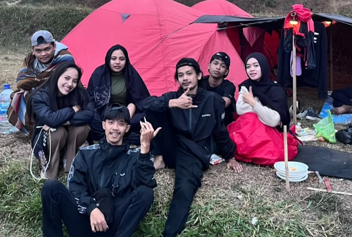

Camping Bersama dalam Rangka HUT PRAJA 21
24 Oktober 2026 Admin PRAJA 21

Dalam rangka memperingati hari ulang tahun PRAJA 21, Karang Taruna RT 02 RW 01 Desa Munding mengadakan kegiatan camping bersama pada tanggal 24 Oktober. Kegiatan ini menjadi salah satu momen spesial dalam perjalanan PRAJA 21 sebagai wadah pemuda-pemudi untuk membangun kebersamaan dan mempererat tali persaudaraan.
Kegiatan camping ini diselenggarakan bukan sekadar sebagai bentuk perayaan bertambahnya usia organisasi, tetapi juga sebagai sarana untuk mempererat tali silaturahmi, meningkatkan rasa kekeluargaan, serta membangun solidaritas antaranggota PRAJA 21.
Melalui kegiatan ini, seluruh anggota diajak untuk sejenak melepas rutinitas sehari-hari dan menikmati kebersamaan di alam terbuka. Berbagai aktivitas kebersamaan menjadi bagian dari kegiatan, mulai dari mendirikan tenda, berkumpul bersama, hingga menikmati suasana malam dengan penuh keakraban.
Suasana hangat dan penuh kekeluargaan menjadi hal utama dalam kegiatan ini. Canda, tawa, dan berbagai momen kebersamaan yang tercipta diharapkan dapat menjadi kenangan berharga sekaligus memperkuat hubungan antaranggota PRAJA 21.
Dengan bertambahnya usia, PRAJA 21 diharapkan semakin solid, aktif, kreatif, dan terus memberikan kontribusi positif bagi lingkungan masyarakat, khususnya di Desa Munding. Semangat kebersamaan yang telah dibangun diharapkan dapat terus terjaga dan menjadi motivasi untuk melaksanakan berbagai kegiatan positif di masa mendatang.
Satu kebersamaan, satu tujuan, satu keluarga. Selamat ulang tahun PRAJA 21!
PRAJA 21 – Bersama, Berkarya, dan Berjaya.